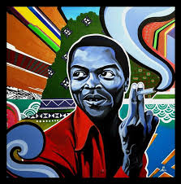

What a wonderful sight to see. Groves of black folk making pilgrimages to the movie theater dressed in traditional African regalia to celebrate the release of the first high budgeted movie about a black superhero. A movie based in Africa, with black writers, directors, and actors, being told from a black perspective. This movie marks the beginning of a new black cinematic age that expresses itself boldly amongst the most hostile political landscape our country has seen in decades.
The
soundtrack
for the movie, produced by Kendrick Lamar, was a major component to making
this movie a masterpiece. Eight of the songs from the soundtrack charted on
the Billboard Hot 100. Although I expected a soundtrack produced by an
American Hip Hop Artist to contain mainly American Hip Hop & R&B, I
still expected a more African influenced soundtrack. The soundtrack
features mainly Hip Hop & R&B Artists, but featured four African
musicians (Saudi, Yugen Blatrok, Babes Wodumo, Sjava) all from South
Africa, which many would argue is the most westernized country in Africa. I
find this slightly problematic. Not blaming Kendrick Lamar, but the lack of
global education of the diversity of African Culture.
Where do we go from here? I expect more racially influenced movies, albums,
art, and other creative outlets of expression in the Era of Trump. Perhaps
a real life Black Panther Superhero who will unite black people across the
world to fight off colonization and oppression, but perhaps that hero has
already existed.
There a number of politically motivated, vigilant, rebellious, and hero
like musicians who stood up for something greater than themselves, but I am
unsure if there was an artist with as much virtuoso and audacity as the
late and great, Fela Kuti.
The Nigerian born musician connected the Black Diaspora and his music
fought imperialism across the world. Fela’s mother was a feminist activist
during the anti-colonial movement and his father, an Anglican minister and
school principal, served as the first president of the Nigerian Union of
Teachers.
After being sent to London to study medicine, Fela decided to study music
and formed a band that fused Jazz and Highlife (predecessor to Afrobeat).
This band moved to Ghana to think up a new music direction and this is
where Afrobeat, one of Africa’s most prominent sounds, was created.
Afrobeat is a combination of Jazz, Soul, Funk and Traditional Yoruba Music.
Fela would then take his band to Los Angeles where he discovered the Black
Power Movement through the Black Panther Party. This had a profound impact
on his music content shifting his focus from love songs to discussing
social issues.

In the 1970’s and 80’s Fela’s rebellious song lyrics established his
reputation as a political dissident. Questioning Nigerian soldier’s blind
obedience to carry out orders, colonialism, greed, and corruption are some
of the many topics Fela covered. Fela’s music seeks to empower the
disenfranchised masses to rise up against the government. Fela was arrested
by the Nigerian Government over 200 times as a result of his rebellious
music leading to multiple raids and destruction of his village, beatings,
life long scars, and his mother being thrown from the 3rd floor of her
home, falling to her death. Fela used these traumatic experiences as
inspiration to create new material because he believed MUSIC IS THE WEAPON
as it still is today.